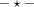
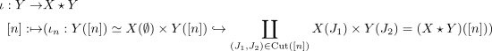
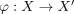
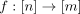
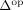
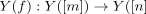
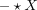
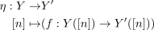
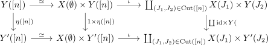

right inclusion into the join of simplicial sets
1. Definition / Proposition
Let  be simplicial sets,
be simplicial sets,

the joinThen there exists a canonical morphism

natural in morphism

with respect to left induced morphism between joins2. Proof
2.1. natural transformation
Let

be a morphism in
. Then there exists a map
and it follows that
commutes by naturality of the coproduct (cf. colim functor)
2.2. naturality with respect to

Suppose there exists a natural transformation

Then it follows for each component  that
that
